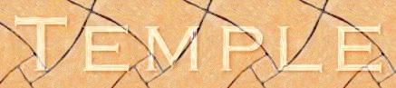
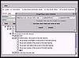

Template Enhancement through Knowledge Acquisition
See the demo -->
More on the people -->
knowledge aquisition scripts,
dependency analysis.
More links -->
|
|
 Template Enhancement through Knowledge Acquisition |
| TEMPLE is an acquisition interface for planning knowledge that relies on script-based wizards to guide users in adding planning constraints and preferences. | |
|
 See the demo --> |
|
|
Yolanda Gil, Jim Blythe, Jihie Kim.
More on the people --> |
|
| "Integrating Expectations from Different Sources to Help End Users Acquire Procedural Knowledge", J. Blythe, IJCAI 01 | |
|
Ontologies and background knowledge, knowledge aquisition scripts, dependency analysis. |
|
| DARPA Active Templates (AcT) program. | |
|
The EXPECT Group homepage. More links --> |
|
| The TEMPLE project started April 2000 and is ongoing... |